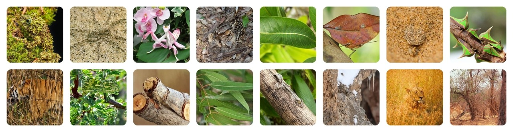

Camuflagem
A camuflagem é uma estratégia de defesa na qual os seres vivos assemelham-se com o ambiente em que vivem.

Nesse caso, os indivíduos de uma espécie podem apresentar coloração, formato ou textura semelhante ao do ambiente e assim passar despercebidos por seu predador.
Porém, o mesmo mecanismo também pode ser utilizado por alguns predadores para surpreender as suas presas.
A camuflagem é um resultado da seleção natural e representa uma adaptação que garante a sobrevivência das espécies no ambiente.
Diferentes animais realizam camuflagem. Alguns apresentam, por exemplo, pelo, penas e escamas que os assemelham ao ambiente em que vivem.
Outros apresentam células chamadas de cromatóforos, que permitem a mudança de cor no corpo do animal de acordo com o ambiente em que ele vive.
Existem dois tipos de camuflagem:
- Homocromia: Quando o indivíduo apresenta coloração semelhante à do ambiente.
- Homotipia: Quando o indivíduo apresenta a estrutura corporal que confunde-se com elementos do ambiente.
Homocromia
No tipo Homocromia, os organismos apresentam padrões de coloração que são geneticamente fixados.
Os organismos, nesse caso, possuem cor semelhante a areia, folhas, galhos ou outras estruturas, tornando-os parecidos com o meio.
Homotipia
Na Homotipia, é a camuflagem pelo chamado “comportamento de decoração”. Nesse caso, o organismo é semelhante a alguma estrutura do ambiente em que vive.